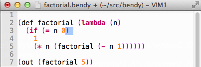

2010.07 – 2010.08
SW Maestro 연수 과정에서 진행한 LISP을 Python으로 구현한 연구 프로젝트 입니다. SICP 책의 내용을 기본으로 언어의 구현 과정을 습득하고 스코프를 이해할 수 있었습니다. 오픈소스로 진행되었기때문에 개발 과정과 소스코드를 Bitbucket repository (http://bitbucket.org/admire93/bendy) 에서 보실 수 있습니다.
언어에 기본 구현 단계에 Lexer, Parser, Evaluator를 테스트 케이스와 함께 구현해보고, 언어를 명세하는 법과 스코프에 대한 이해, 값을 평가하는 다른 방법을 배웠습니다. 배포를 위해서 python에 setup 스크립트를 작성하고 문서화를 sphinx 로 자동화 시키는 방법을 익혔습니다.
REPL 실행 모습
프로그램 실행 모습
